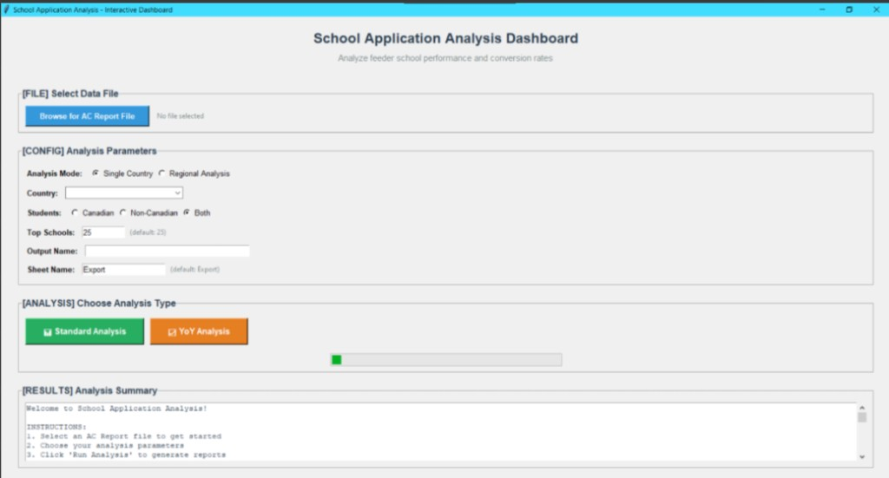

University Application Dashboard
A desktop tool for exploring 5 years of every application to Queen's, not just the admitted ones. Country and regional filters, feeder school rankings, year-over-year conversion analysis, and exports the team actually uses.
The Problem
Working as a recruitment rep at Queen's, I had access to years of application data, every applicant who had ever applied, regardless of whether they got in. But it was all trapped in Excel exports. Brutal to work with. Every question required manual filtering and pivot tables.
"How many international students from the UAE applied to Engineering last year?" "What schools send us the most Commerce applicants?" "Which countries have the highest accept-and-enroll conversion rate?" Simple questions that took an hour to answer in Excel. And bigger questions, like which feeder schools are actually worth visiting on tour, never got answered at all.

What It Does
I pulled the Excel exports into SQLite (way faster for queries) and built a Tkinter desktop interface on top. The whole thing runs locally because the data is sensitive and IT was never going to hand me a server.
Filters You Can Set
- Analysis mode: Single country or regional rollup
- Country selector: Filter to one specific country, or leave blank for all
- Student type: Canadian, non-Canadian, or both
- Top N schools: How deep into the ranking to go (default 25)
- Output name and sheet name: So the export file lands where you want it for the report you're writing
Analysis Modes
- Standard analysis: A snapshot view, with feeder school rankings, application volume, and conversion rates for the selected filter
- Year-over-year analysis: Same view, but trended across all 5 years so you can see what's growing, what's declining, and where the recruitment effort actually moved the needle
What You Can Answer With It
- Demographics: Country of origin, citizenship status, which high school they attended
- Application data: Programs applied to, admission status (accepted, rejected, waitlisted), enrollment outcome
- Responses: Why they accepted or declined offers, where else they applied
- Conversion: What percentage of applications from a given school or country actually result in enrolled students
Instead of spending an hour in Excel, you can answer these in seconds and export the result straight to a named sheet. The team started using it for reports and presentations almost immediately.
Technical Stack
Python and Tkinter
Desktop app for sensitive internal data, no cloud anything
Pandas and openpyxl
Wrangling brutal Excel exports into usable data
SQLite
Local database for fast querying instead of repeatedly filtering huge dataframes in memory
Matplotlib
Embedded visualizations and bar charts inside the Tkinter window
Excel Export
Named sheets in named files so reports drop straight into the team's templates
Config Driven
JSON config so adding new schools, countries, or programs is data, not code
By the Numbers
The Real Win
The interesting thing about this tool isn't the tech, it's what changed once people had it. Questions that used to die because nobody had time to answer them ("is the East Asia tour still worth it?", "are we converting from this region or just hearing from them?") suddenly had answers. The conversation shifts when the data is one click away.
Once you can ask the question, you start asking better ones.
What I Learned
- Excel is brutal at scale. 170K rows across multiple files, never again. SQLite saved my sanity.
- Build tools that answer questions, not tools that show data. Users don't care about your database schema. They have a question and a deadline.
- Local desktop apps are fine. Not everything needs to be a web app. Tkinter looks dated, runs everywhere, and IT doesn't have to approve anything.
- Export early, export often. Half the value of a dashboard is dropping the result straight into the report someone is already writing.